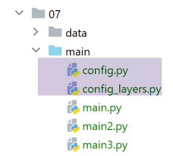

31. Clients web pour les services jSON et XML de la version 12
Nous allons écrire trois applications console clientes des services jSON et XML du serveur web que nous venons d’écrire. Nous reprenons l’architecture client / serveur de la version 11 :

Nous écrirons trois scripts console :
- les scripts [main] et [main3] utiliseront la couche [métier] du serveur ;
- le script [main2] utilisera la couche [métier] du client ;
31.1. L’arborescence des scripts des clients
Le dossier [http-clients/07] est obtenu initialement par recopie du dossier [http-clients/06]. Il est ensuite modifié.

- en [1] : les données exploitées ou créées par le client ;
- en [2], la configuration et les scripts console du client ;
- en [3], la couche [dao] du client ;
- en [4], le dossier des tests de la couche [dao] du client ;
31.2. La couche [dao] des clients


31.2.1. Interface
La couche [dao] implémentera l’interface [InterfaceImpôtsDaoWithHttpSession] suivante :
from abc import abstractmethod
from AbstractImpôtsDao import AbstractImpôtsDao
from AdminData import AdminData
from TaxPayer import TaxPayer
class InterfaceImpôtsDaoWithHttpSession(AbstractImpôtsDao):
# calcul de l'impôt par unité
@abstractmethod
def calculate_tax(self, taxpayer: TaxPayer):
pass
# calcul de l'impôt par lots
@abstractmethod
def calculate_tax_in_bulk_mode(self, taxpayers: list):
pass
# initialisation d'une session
@abstractmethod
def init_session(self, type_session: str):
pass
# fin de session
@abstractmethod
def end_session(self):
pass
# authentification
@abstractmethod
def authenticate_user(self, user: str, password: str):
pass
# liste des simulations
@abstractmethod
def get_simulations(self) -> list:
pass
# supprimer une simulation
@abstractmethod
def delete_simulation(self, id: int) -> list:
pass
# obtenir les données permettant le calcul de l'impôt
@abstractmethod
def get_admindata(self) -> AdminData:
pass
Chaque méthode de l’interface correspond à une URL de service du serveur de calcul de l’impôt.
- ligne 7 : l’interface étend la classe [AbstractDao] qui gère les accès au système de fichiers ;
La correspondance entre les méthodes et les URL de service est faite dans le fichier de configuration [config] :
# le serveur de calcul de l'impôt
"server": {
"urlServer": "http://127.0.0.1:5000",
"user": {
"login": "admin",
"password": "admin"
},
"url_services": {
"calculate-tax": "/calculer-impot",
"get-admindata": "/get-admindata",
"calculate-tax-in-bulk-mode": "/calculer-impots",
"init-session": "/init-session",
"end-session": "/fin-session",
"authenticate-user": "/authentifier-utilisateur",
"get-simulations": "/lister-simulations",
"delete-simulation": "/supprimer-simulation"
}
31.2.2. Implémentation
L’interface [InterfaceImpôtsDaoWithHttpSession] est implémentée par la classe [ImpôtsDaoWithHttpSession] suivante :
# imports
import json
import requests
import xmltodict
from flask_api import status
from AbstractImpôtsDao import AbstractImpôtsDao
from AdminData import AdminData
from ImpôtsError import ImpôtsError
from InterfaceImpôtsDaoWithHttpSession import InterfaceImpôtsDaoWithHttpSession
from TaxPayer import TaxPayer
class ImpôtsDaoWithHttpSession(InterfaceImpôtsDaoWithHttpSession):
# constructeur
def __init__(self, config: dict):
# initialisation parent
AbstractImpôtsDao.__init__(self, config)
# mémorisation éléments de la configuration
# config générale
self.__config = config
# serveur
self.__config_server = config["server"]
# services
self.__config_services = config["server"]['url_services']
# mode debug
self.__debug = config["debug"]
# logger
self.__logger = None
# cookies
self.__cookies = None
# type de session (json, xml)
self.__session_type = None
# étape request / response
def get_response(self, method: str, url_service: str, data_value: dict = None, json_value=None):
# [method] : méthode HTTP GET ou POST
# [url_service] : URL de service
# [data] : paramètres du POST en x-www-form-urlencoded
# [json] : paramètres du POST en json
# [cookies]: cookies à inclure dans la requête
# on doit avoir une session XML ou JSON, sinon on ne pourra pas gérer la réponse
if self.__session_type not in ['json', 'xml']:
raise ImpôtsError(73, "il n'y a pas de session valide en cours")
# connexion
if method == "GET":
# GET
response = requests.get(url_service, cookies=self.__cookies)
else:
# POST
response = requests.post(url_service, data=data_value, json=json_value, cookies=self.__cookies)
# mode debug ?
if self.__debug:
# logueur
if not self.__logger:
self.__logger = self.__config['logger']
# on logue
self.__logger.write(f"{response.text}\n")
# résultat
if self.__session_type == "json":
résultat = json.loads(response.text)
else: # xml
résultat = xmltodict.parse(response.text[39:])['root']
# on récupère les cookies de la réponse s'il y en a
if response.cookies:
self.__cookies = response.cookies
# code de statut
status_code = response.status_code
# si code de statut différent de 200 OK
if status_code != status.HTTP_200_OK:
raise ImpôtsError(35, résultat['réponse'])
# on rend le résultat
return résultat['réponse']
def init_session(self, session_type: str):
# on note le type de la session
self.__session_type = session_type
# url de service
config_server = self.__config_server
url_service = f"{config_server['urlServer']}{self.__config_services['init-session']}/{session_type}"
# exécution requête
self.get_response("GET", url_service)
…
- lignes 16-34 : le constructeur de la classe ;
- ligne 19 : la classe parent est initialisée ;
- lignes 21-28 : on mémorise certaines données de la configuration ;
- lignes 29-34 : on crée trois propriétés utilisées dans les méthodes de la classe ;
- lignes 36-82 : la méthode [get_response] factorise ce qui est commun à toutes les méthodes de la couche [dao] : l’envoi d’une requête HTTP et la récupération de la réponse HTTP du serveur ;
- lignes 38-42 : définition des 5 paramètres de la méthode [get_response] ;
- ligne 42 : on notera que parce que le serveur maintient une session, le client a besoin de lire / renvoyer des cookies ;
- lignes 44-46 : on vérifie qu’il y a bien une session en cours valide ;
- ligne 51 : cas du GET. On renvoie les cookies reçus ;
- ligne 54 : cas du POST. Celui-ci peut avoir deux types de paramètres :
- le type [x-www-form-urlencoded]. C’est le cas des URL [/calculer-impot] et [/authentifier-utilisateur]. On utilise alors le paramètre [data_value] reçu par la méthode ;
- le type [json]. C’est le cas de l’URL [/calculer-impots]. On utilise alors le paramètre [json_value] reçu par la méthode ;
Là également, le cookie de session est renvoyé.
- lignes 56-62 : si on est en mode [debug], la réponse du serveur est loguée. Ce log est important car il permet de savoir exactement ce qu’a renvoyé le serveur ;
- lignes 64-68 : selon que l’on est en mode json ou xml, la réponse texte du serveur est transformée en dictionnaire. Prenons l’exemple de l’URL [/init-session] :
La réponse jSON est la suivante :
2020-08-03 11:45:21.218116, MainThread : {"action": "init-session", "état": 700, "réponse": ["session démarrée avec le type de réponse json"]}
La réponse XML est la suivante :
2020-08-03 11:45:54.671871, MainThread : <?xml version="1.0" encoding="utf-8"?>
<root><action>init-session</action><état>700</état><réponse>session démarrée avec le type de réponse xml</réponse></root>
Le code des lignes 64-68 assure que dans les deux cas, on obtient dans [résultat] un dictionnaire avec les clés [action, état, réponse] ;
- lignes 70-72 : si la réponse contient des cookies on les récupère. Il faudra les renvoyer lors de la prochaine requête ;
- lignes 74-79 : si le statut HTTP de la réponse est différent de 200, on lève une exception avec le message d’erreur contenu dans résultat[’réponse’]. Ce peut être une erreur ou une liste d’erreurs ;
- lignes 81-82 : on rend la réponse du serveur au code appelant ;
[init_session]
- ligne 84 : la méthode [init_session] sert à fixer le type de session json ou xml que veut commencer le client avec le serveur ;
- ligne 86 : on note le type de session désiré au sein de la classe. En effet, toutes les méthodes ont besoin de cette information pour décoder correctement la réponse du serveur ;
- lignes 88-90 : à l’aide de la configuration de l’application, on détermine l’URL de service qu’il faut interroger ;
- ligne 93 : l’URL de service est interrogée. On ne récupère pas le résultat de la méthode [get_response] :
- si elle lance une exception, alors l’opération a échoué. L’exception n’est pas gérée ici et remontera directement au code appelant qui arrêtera alors le client avec un message d’erreur ;
- si elle ne lance pas d’exception, alors c’est que l’initialisation de la session a réussi ;
[authenticate_user]
def authenticate_user(self, user: str, password: str):
# url de service
config_server = self.__config_server
url_service = f"{config_server['urlServer']}{self.__config_services['authenticate-user']}"
post_params = {
"user": user,
"password": password
}
# exécution requête
self.get_response("POST", url_service, post_params)
- la méthode [authenticate_user] sert à s’authentifier auprès du serveur. Pour cela elle reçoit les identifiants de connexion [user, password] en ligne 1 ;
- lignes 2-4 : on détermine l’URL de service à interroger ;
- lignes 5-8 : les paramètres du POST puisque l’URL [/authentifier-utilisateur] attend un POST avec des paramètres [user, password] ;
- ligne 11 : la requête est exécutée. Là encore on ne récupère pas la réponse du serveur. C’est l’exception lancée par [get_response] qui indique si on a réussi ou pas ;
[calculate_tax]
def calculate_tax(self, taxpayer: TaxPayer):
# url de service
config_server = self.__config_server
url_service = f"{config_server['urlServer']}{self.__config_services['calculate-tax']}"
# paramètres du POST
post_params = {
"marié": taxpayer.marié,
"enfants": taxpayer.enfants,
"salaire": taxpayer.salaire
}
# exécution requête
response = self.get_response("POST", url_service, post_params)
# mise à jour du TaxPayer avec la réponse
taxpayer.fromdict(response)
- la méthode [calculate_tax] permet de calculer l’impôt d’un contribuable [taxpayer] passé en paramètre. Ce paramètre est modifié par la méthode (ligne 15) et constitue donc le résultat de la méthode ;
- lignes 2-4 : on définit l’URL de service à interroger ;
- lignes 6-10 : les paramètres du POST à émettre. En effet, l’URL de service [/calculer-impot] attend un POST avec les paramètres [marié, enfants, salaire] ;
- lignes 12-13 : la requête est exécutée et la réponse du serveur récupérée. L’URL de service [/calculer-impot] renvoie un dictionnaire avec les clés [impôt, décôte, surcôte, réduction, taux] de l’impôt ;
- ligne 15 : le dictionnaire [response] obtenu est utilisé pour mettre à jour le contribuable [taxpayer] ;
[calculate_tax_in_bulk_mode]
# calcul de l'impôt en mode bulk
def calculate_tax_in_bulk_mode(self, taxpayers: list):
# on laisse remonter les exceptions
# on transforme les taxpayers en liste de dictionnaires
# on ne garde que les propriétés [marié, enfants, salaire]
list_dict_taxpayers = list(
map(lambda taxpayer:
taxpayer.asdict(included_keys=[
'_TaxPayer__marié',
'_TaxPayer__enfants',
'_TaxPayer__salaire']),
taxpayers))
# url de service
config_server = self.__config_server
url_service = f"{config_server['urlServer']}{self.__config_services['calculate-tax-in-bulk-mode']}"
# exécution requête
list_dict_taxpayers2 = self.get_response("POST", url_service, data_value=None, json_value=list_dict_taxpayers)
# lorsqu'il n'y a qu'un contribuable et qu'on est dans une session xml, [list_dict_taxpayers2] n'est pas une liste
# dans ce cas on en fait une liste
if not isinstance(list_dict_taxpayers2, list):
list_dict_taxpayers2 = [list_dict_taxpayers2]
# on met à jour la liste initiale des taxpayers avec les résultats reçus
for i in range(len(taxpayers)):
# mise à jour de taxpayers[i]
taxpayers[i].fromdict(list_dict_taxpayers2[i])
# ici le paramètre [taxpayers] a été mis à jour avec les résultats du serveur
- ligne 2 : la méthode reçoit une liste de contribuables de type TaxPayer ;
- lignes 7-13 : cette liste d’élements de type [TaxPayer] est transformée en liste de dictionnaires [marié, enfants, salaire] ;
- lignes 15-17 : on fixe l’URL de service ;
- lignes 19-20 : on exécute une requête POST dont le corps jSON est formé de la liste des dictionnaires créée ligne 7. On récupère la réponse du serveur ;
- lignes 23-24 : les tests ont montré un problème lorsque la session est de type XML :
- si la liste initiale des contribuables a N éléments (N>1) on obtient comme résultat une liste de N dictionnaires de type [OrderedDict] ;
- si la liste initiale n’a qu’un élément, on obtient non pas une liste mais un élément de type [OrderedDict] ;
- lignes 23-24 : si on est dans ce dernier cas (1 élément), on transforme le résultat en liste de 1 élément ;
- lignes 25-28 : cette liste de dictionnaires reçus contient l’impôt de chaque contribuable de la liste initiale. On met à jour alors chacun d’eux avec les résultats reçus ;
[get_simulations]
def get_simulations(self) -> list:
# url de service
config_server = self.__config_server
url_service = f"{config_server['urlServer']}{self.__config_services['get-simulations']}"
# exécution requête
return self.get_response("GET", url_service)
- ligne 1 : la méthode demande la liste des simulations faites dans la session courante ;
- ligne 2 : la méthode rend la réponse du serveur ;
[delete_simulation]
def delete_simulation(self, id: int) -> list:
# url de service
config_server = self.__config_server
url_service = f"{config_server['urlServer']}{self.__config_services['delete-simulation']}/{id}"
# exécution requête
return self.get_response("GET", url_service)
- ligne 1 : la méthode supprime la simulation dont on passe l’identifiant ;
- ligne 7 : elle rend la réponse du serveur, la liste des simulations restantes après la suppression demandée ;
[get-admindata]
def get_admindata(self) -> AdminData:
# on laisse remonter les exceptions
# url de service
config_server = self.__config_server
url_service = f"{config_server['urlServer']}{self.__config_services['get-admindata']}"
# exécution requête
résultat = self.get_response("GET", url_service)
# résultat est un dictionnaire de valeurs de type str si session xml
if self.__session_type == 'xml':
# nouveau dictionnaire
résultat2 = {}
# on passe tout en numérique
for key, value in résultat.items():
# certains éléments du dictionnaire sont des listes
if isinstance(value, list):
values = []
for value2 in value:
values.append(float(value2))
résultat2[key] = values
else:
# d'autres de simples éléments
résultat2[key] = float(value)
else:
résultat2 = résultat
# résultat de type AdminData
return AdminData().fromdict(résultat2)
- ligne 1 : la méthode demande au serveur les constantes fiscales permettant le calcul de l’impôt ;
- ligne 29 : elle rend un type [AdminData] ;
- ligne 9 : on récupère la réponse du serveur sous la forme d’un dictionnaire. Les tests montrent qu’il y a un problème lorsque la session est une session XML : au lieu d’être des valeurs numériques, les valeurs du dictionnaire sont des chaînes de caractères. Nous avions signalé ce problème lors de l’étude du module [xmltodict] et constaté que c’était un fonctionnement normal. [xmltodict] n’a pas d’informations de types dans le flux XML qu’on lui donne. Ceci dit, dans ce cas précis, il faut convertir en numérique toutes les valeurs du dictionnaire reçu. Celui-ci contient trois listes [limites, coeffr, coeffn] et une suite de propriétés numériques ;
- lignes 13-25 : création d’un dictionnaire [résultat2] à valeurs numériques à partir du dictionnaire [résultat] à valeurs de type chaîne de caractères ;
- ligne 29 : le dictionnaire [resultat2] est utilisé pour initialiser un type [AdminData] ;
31.2.3. La factory de la couche [dao]
Nos clients seront multi-threadés. Comme la couche [dao] est implémentée par une classe ayant un état en lecture / écriture (= des propriétés en lecture / écriture), chaque thread doit avoir sa propre couche [dao] ou alors il faut synchroniser l’accès aux données partagées entre les threads. Ici nous prenons la première solution. Nous utilisons une classe [ImpôtsDaoWithHttpSessionFactory] capable de créer des instances de la couche [dao] :
from ImpôtsDaoWithHttpSession import ImpôtsDaoWithHttpSession
class ImpôtsDaoWithHttpSessionFactory:
def __init__(self, config: dict):
# on mémorise le paramètre
self.__config = config
def new_instance(self):
# on rend une instance de la couche [dao]
return ImpôtsDaoWithHttpSession(self.__config)
31.3. Configuration des clients

Les clients sont configurés par les fichiers [config] et [config_layers]. Le fichier [config] est le suivant :
def configure(config: dict) -> dict:
import os
# étape 1 ------
# dossier de ce fichier
script_dir = os.path.dirname(os.path.abspath(__file__))
# chemin racine
root_dir = "C:/Data/st-2020/dev/python/cours-2020/python3-flask-2020"
# dépendances absolues
absolute_dependencies = [
# dossiers du projet
# BaseEntity, MyException
f"{root_dir}/classes/02/entities",
# InterfaceImpôtsDao, InterfaceImpôtsMétier, InterfaceImpôtsUi
f"{root_dir}/impots/v04/interfaces",
# AbstractImpôtsdao, ImpôtsConsole, ImpôtsMétier
f"{root_dir}/impots/v04/services",
# ImpotsDaoWithAdminDataInDatabase
f"{root_dir}/impots/v05/services",
# AdminData, ImpôtsError, TaxPayer
f"{root_dir}/impots/v04/entities",
# Constantes, tranches
f"{root_dir}/impots/v05/entities",
# ImpôtsDaoWithHttpSession, ImpôtsDaoWithHttpSessionFactory, InterfaceImpôtsDaoWithHttpSession
f"{script_dir}/../services",
# scripts de configuration
script_dir,
# Logger
f"{root_dir}/impots/http-servers/02/utilities",
]
# on fixe le syspath
from myutils import set_syspath
set_syspath(absolute_dependencies)
# étape 2 ------
# configuration de l'application avec des constantes
config.update({
# fichier des contribuables
"taxpayersFilename": f"{script_dir}/../data/input/taxpayersdata.txt",
# fichier des résultats
"resultsFilename": f"{script_dir}/../data/output/résultats.json",
# fichier des erreurs
"errorsFilename": f"{script_dir}/../data/output/errors.txt",
# fichier de logs
"logsFilename": f"{script_dir}/../data/logs/logs.txt",
# le serveur de calcul de l'impôt
"server": {
"urlServer": "http://127.0.0.1:5000",
"user": {
"login": "admin",
"password": "admin"
},
"url_services": {
"calculate-tax": "/calculer-impot",
"get-admindata": "/get-admindata",
"calculate-tax-in-bulk-mode": "/calculer-impots",
"init-session": "/init-session",
"end-session": "/fin-session",
"authenticate-user": "/authentifier-utilisateur",
"get-simulations": "/lister-simulations",
"delete-simulation": "/supprimer-simulation"
}
},
# mode debug
"debug": True
}
)
# étape 3 ------
# instanciation des couches
import config_layers
config['layers'] = config_layers.configure(config)
# on rend la configuation
return config
Le fichier [config_layers] est le suivant :
def configure(config: dict) -> dict:
# instanciation des couches de l'applicatuon
# couche [métier]
from ImpôtsMétier import ImpôtsMétier
métier = ImpôtsMétier()
# factory de la couche dao
from ImpôtsDaoWithHttpSessionFactory import ImpôtsDaoWithHttpSessionFactory
dao_factory = ImpôtsDaoWithHttpSessionFactory(config)
# on rend la configuration des couches
return {
"dao_factory": dao_factory,
"métier": métier
}
- les clients n’auront pas un accès direct à la couche [dao]. Pour en avoir une, ils devront passer par la factory de la couche [dao] ;
31.4. Le client [main]
Le client [main] permet de tester les URL [/init-session, /authentifier-utilisateur, /calculer-impots, /fin-session] :
# on attend un paramètre json ou xml
import sys
syntaxe = f"{sys.argv[0]} json / xml"
erreur = len(sys.argv) != 2
if not erreur:
session_type = sys.argv[1].lower()
erreur = session_type != "json" and session_type != "xml"
if erreur:
print(f"syntaxe : {syntaxe}")
sys.exit()
# on configure l'application
import config
config = config.configure({"session_type": session_type})
# dépendances
from ImpôtsError import ImpôtsError
import random
import sys
import threading
from Logger import Logger
# exécution de la couche [dao] dans un thread
# taxpayers est une liste de contribuables
def thread_function(config: dict, taxpayers: list):
# on récupère la factory de la couche [dao]
dao_factory = config['layers']['dao_factory']
# on crée une instance de couche [dao]
dao = dao_factory.new_instance()
# type de la session
session_type = config['session_type']
# nombre de contribuables
nb_taxpayers = len(taxpayers)
# log
logger.write(f"début du calcul de l'impôt des {nb_taxpayers} contribuables\n")
# on initialise la session
dao.init_session(session_type)
# on s'authentifie
dao.authenticate_user(config['server']['user']['login'], config['server']['user']['password'])
# on calcule l'impôt des contribuables
dao.calculate_tax_in_bulk_mode(taxpayers)
# fin de session
dao.end_session()
# log
logger.write(f"fin du calcul de l'impôt des {nb_taxpayers} contribuables\n")
# liste des threads du client
threads = []
logger = None
# code
try:
# logger
logger = Logger(config["logsFilename"])
# on le mémorise dans la config
config["logger"] = logger
# log de début
logger.write("début du calcul de l'impôt des contribuables\n")
# on récupère la factory de la couche [dao]
dao_factory = config["layers"]["dao_factory"]
# on crée une instance de la couche [dao]
dao = dao_factory.new_instance()
# lecture des données des contribuables
taxpayers = dao.get_taxpayers_data()["taxpayers"]
# des contribuables ?
if not taxpayers:
raise ImpôtsError(36, f"Pas de contribuables valides dans le fichier {config['taxpayersFilename']}")
# calcul de l'impôt des contribuables avec plusieurs threads
i = 0
l_taxpayers = len(taxpayers)
while i < len(taxpayers):
# chaque thread va traiter de 1 à 4 contribuables
nb_taxpayers = min(l_taxpayers - i, random.randint(1, 4))
# la liste des contribuables traités par le thread
thread_taxpayers = taxpayers[slice(i, i + nb_taxpayers)]
# on incrémente i pour le thread suivant
i += nb_taxpayers
# on crée le thread
thread = threading.Thread(target=thread_function, args=(config, thread_taxpayers))
# on l'ajoute à la liste des threads du script principal
threads.append(thread)
# on lance le thread - cette opération est asynchrone - on n'attend pas le résultat du thread
thread.start()
# le thread principal attend la fin de tous les threads qu'il a lancés
for thread in threads:
thread.join()
# ici tous les threads ont fini leur travail - chacun a modifié un ou plusieurs objets [taxpayer]
# on enregistre les résultats dans le fichier jSON
dao.write_taxpayers_results(taxpayers)
# fin
except BaseException as erreur:
# affichage de l'erreur
print(f"L'erreur suivante s'est produite : {erreur}")
finally:
# on ferme le logueur
if logger:
# log de fin
logger.write("fin du calcul de l'impôt des contribuables\n")
# fermeture du logueur
logger.close()
# on a fini
print("Travail terminé...")
# fin des threads qui pourraient encore exister si on s'est arrêté sur erreur
sys.exit()
- lignes 4-11 : le client attend un paramètre lui indiquant le type de session, json ou xml, à utiliser avec le serveur ;
- lignes 13-15 : le client est configuré ;
- lignes 48-104 : ce code est connu. Il a été utilisé de nombreuses fois. Il répartit les contribuables pour lesquels on veut calculer l’impôt sur plusieurs threads ;
- ligne 26 : la méthode [thread_function] est la méthode exécutée par chaque thread pour calculer l’impôt des contribuables qui lui ont été attribués ;
- lignes 27-30 : chaque thread a sa propre couche [dao] ;
- le calcul de l’impôt se fait en quatre étapes :
- lignes 37-38 : initialisation d’une session, json ou xml, avec le serveur ;
- lignes 39-40 : authentification auprès du serveur ;
- lignes 41-42 : calcul de l’impôt ;
- lignes 43-44 : fermeture de la session avec le serveur ;
Lorsqu’on exécute ce code en mode [json], on obtient les logs suivants :
2020-08-03 14:28:34.320751, MainThread : début du calcul de l'impôt des contribuables
2020-08-03 14:28:34.328749, Thread-1 : début du calcul de l'impôt des 4 contribuables
2020-08-03 14:28:34.328749, Thread-2 : début du calcul de l'impôt des 4 contribuables
2020-08-03 14:28:34.333592, Thread-3 : début du calcul de l'impôt des 3 contribuables
2020-08-03 14:28:34.368651, Thread-2 : {"action": "init-session", "état": 700, "réponse": ["session démarrée avec le type de réponse json"]}
2020-08-03 14:28:34.375699, Thread-1 : {"action": "init-session", "état": 700, "réponse": ["session démarrée avec le type de réponse json"]}
2020-08-03 14:28:34.377432, Thread-3 : {"action": "init-session", "état": 700, "réponse": ["session démarrée avec le type de réponse json"]}
2020-08-03 14:28:34.385653, Thread-2 : {"action": "authentifier-utilisateur", "état": 200, "réponse": "Authentification réussie"}
2020-08-03 14:28:34.392656, Thread-1 : {"action": "authentifier-utilisateur", "état": 200, "réponse": "Authentification réussie"}
2020-08-03 14:28:34.396377, Thread-3 : {"action": "authentifier-utilisateur", "état": 200, "réponse": "Authentification réussie"}
2020-08-03 14:28:34.406528, Thread-2 : {"action": "calculer-impots", "état": 1500, "réponse": [{"marié": "non", "enfants": 3, "salaire": 100000, "impôt": 16782, "surcôte": 7176, "taux": 0.41, "décôte": 0, "réduction": 0, "id": 1}, {"marié": "oui", "enfants": 3, "salaire": 100000, "impôt": 9200, "surcôte": 2180, "taux": 0.3, "décôte": 0, "réduction": 0, "id": 2}, {"marié": "oui", "enfants": 5, "salaire": 100000, "impôt": 4230, "surcôte": 0, "taux": 0.14, "décôte": 0, "réduction": 0, "id": 3}, {"marié": "non", "enfants": 0, "salaire": 100000, "impôt": 22986, "surcôte": 0, "taux": 0.41, "décôte": 0, "réduction": 0, "id": 4}]}
2020-08-03 14:28:34.413837, Thread-1 : {"action": "calculer-impots", "état": 1500, "réponse": [{"marié": "oui", "enfants": 2, "salaire": 55555, "impôt": 2814, "surcôte": 0, "taux": 0.14, "décôte": 0, "réduction": 0, "id": 1}, {"marié": "oui", "enfants": 2, "salaire": 50000, "impôt": 1384, "surcôte": 0, "taux": 0.14, "décôte": 384, "réduction": 347, "id": 2}, {"marié": "oui", "enfants": 3, "salaire": 50000, "impôt": 0, "surcôte": 0, "taux": 0.14, "décôte": 720, "réduction": 0, "id": 3}, {"marié": "non", "enfants": 2, "salaire": 100000, "impôt": 19884, "surcôte": 4480, "taux": 0.41, "décôte": 0, "réduction": 0, "id": 4}]}
2020-08-03 14:28:34.416695, Thread-3 : {"action": "calculer-impots", "état": 1500, "réponse": [{"marié": "oui", "enfants": 2, "salaire": 30000, "impôt": 0, "surcôte": 0, "taux": 0.0, "décôte": 0, "réduction": 0, "id": 1}, {"marié": "non", "enfants": 0, "salaire": 200000, "impôt": 64210, "surcôte": 7498, "taux": 0.45, "décôte": 0, "réduction": 0, "id": 2}, {"marié": "oui", "enfants": 3, "salaire": 200000, "impôt": 42842, "surcôte": 17283, "taux": 0.41, "décôte": 0, "réduction": 0, "id": 3}]}
2020-08-03 14:28:34.425747, Thread-2 : {"action": "fin-session", "état": 400, "réponse": "session réinitialisée"}
2020-08-03 14:28:34.425747, Thread-2 : fin du calcul de l'impôt des 4 contribuables
2020-08-03 14:28:34.428956, Thread-1 : {"action": "fin-session", "état": 400, "réponse": "session réinitialisée"}
2020-08-03 14:28:34.428956, Thread-1 : fin du calcul de l'impôt des 4 contribuables
2020-08-03 14:28:34.428956, Thread-3 : {"action": "fin-session", "état": 400, "réponse": "session réinitialisée"}
2020-08-03 14:28:34.428956, Thread-3 : fin du calcul de l'impôt des 3 contribuables
2020-08-03 14:28:34.428956, MainThread : fin du calcul de l'impôt des contribuables
On voit ci-dessus le parcours du thread [Thread-2].
Si on exécute [main] en mode XML, les logs sont les suivants :
2020-08-03 14:32:48.495316, MainThread : début du calcul de l'impôt des contribuables
2020-08-03 14:32:48.496452, Thread-1 : début du calcul de l'impôt des 2 contribuables
2020-08-03 14:32:48.498992, Thread-2 : début du calcul de l'impôt des 2 contribuables
2020-08-03 14:32:48.498992, Thread-3 : début du calcul de l'impôt des 4 contribuables
2020-08-03 14:32:48.498992, Thread-4 : début du calcul de l'impôt des 3 contribuables
2020-08-03 14:32:48.538637, Thread-1 : <?xml version="1.0" encoding="utf-8"?>
<root><action>init-session</action><état>700</état><réponse>session démarrée avec le type de réponse xml</réponse></root>
2020-08-03 14:32:48.540783, Thread-4 : <?xml version="1.0" encoding="utf-8"?>
<root><action>init-session</action><état>700</état><réponse>session démarrée avec le type de réponse xml</réponse></root>
2020-08-03 14:32:48.547811, Thread-3 : <?xml version="1.0" encoding="utf-8"?>
<root><action>init-session</action><état>700</état><réponse>session démarrée avec le type de réponse xml</réponse></root>
2020-08-03 14:32:48.547811, Thread-2 : <?xml version="1.0" encoding="utf-8"?>
<root><action>init-session</action><état>700</état><réponse>session démarrée avec le type de réponse xml</réponse></root>
2020-08-03 14:32:48.555184, Thread-1 : <?xml version="1.0" encoding="utf-8"?>
<root><action>authentifier-utilisateur</action><état>200</état><réponse>Authentification réussie</réponse></root>
2020-08-03 14:32:48.564793, Thread-2 : <?xml version="1.0" encoding="utf-8"?>
<root><action>authentifier-utilisateur</action><état>200</état><réponse>Authentification réussie</réponse></root>
2020-08-03 14:32:48.564793, Thread-3 : <?xml version="1.0" encoding="utf-8"?>
<root><action>authentifier-utilisateur</action><état>200</état><réponse>Authentification réussie</réponse></root>
2020-08-03 14:32:48.568333, Thread-4 : <?xml version="1.0" encoding="utf-8"?>
<root><action>authentifier-utilisateur</action><état>200</état><réponse>Authentification réussie</réponse></root>
2020-08-03 14:32:48.568333, Thread-1 : <?xml version="1.0" encoding="utf-8"?>
<root><action>calculer-impots</action><état>1500</état><réponse><marié>oui</marié><enfants>2</enfants><salaire>55555</salaire><impôt>2814</impôt><surcôte>0</surcôte><taux>0.14</taux><décôte>0</décôte><réduction>0</réduction><id>1</id></réponse><réponse><marié>oui</marié><enfants>2</enfants><salaire>50000</salaire><impôt>1384</impôt><surcôte>0</surcôte><taux>0.14</taux><décôte>384</décôte><réduction>347</réduction><id>2</id></réponse></root>
2020-08-03 14:32:48.579205, Thread-2 : <?xml version="1.0" encoding="utf-8"?>
<root><action>calculer-impots</action><état>1500</état><réponse><marié>oui</marié><enfants>3</enfants><salaire>50000</salaire><impôt>0</impôt><surcôte>0</surcôte><taux>0.14</taux><décôte>720</décôte><réduction>0</réduction><id>1</id></réponse><réponse><marié>non</marié><enfants>2</enfants><salaire>100000</salaire><impôt>19884</impôt><surcôte>4480</surcôte><taux>0.41</taux><décôte>0</décôte><réduction>0</réduction><id>2</id></réponse></root>
2020-08-03 14:32:48.579205, Thread-3 : <?xml version="1.0" encoding="utf-8"?>
<root><action>calculer-impots</action><état>1500</état><réponse><marié>non</marié><enfants>3</enfants><salaire>100000</salaire><impôt>16782</impôt><surcôte>7176</surcôte><taux>0.41</taux><décôte>0</décôte><réduction>0</réduction><id>1</id></réponse><réponse><marié>oui</marié><enfants>3</enfants><salaire>100000</salaire><impôt>9200</impôt><surcôte>2180</surcôte><taux>0.3</taux><décôte>0</décôte><réduction>0</réduction><id>2</id></réponse><réponse><marié>oui</marié><enfants>5</enfants><salaire>100000</salaire><impôt>4230</impôt><surcôte>0</surcôte><taux>0.14</taux><décôte>0</décôte><réduction>0</réduction><id>3</id></réponse><réponse><marié>non</marié><enfants>0</enfants><salaire>100000</salaire><impôt>22986</impôt><surcôte>0</surcôte><taux>0.41</taux><décôte>0</décôte><réduction>0</réduction><id>4</id></réponse></root>
2020-08-03 14:32:48.588051, Thread-4 : <?xml version="1.0" encoding="utf-8"?>
<root><action>calculer-impots</action><état>1500</état><réponse><marié>oui</marié><enfants>2</enfants><salaire>30000</salaire><impôt>0</impôt><surcôte>0</surcôte><taux>0.0</taux><décôte>0</décôte><réduction>0</réduction><id>1</id></réponse><réponse><marié>non</marié><enfants>0</enfants><salaire>200000</salaire><impôt>64210</impôt><surcôte>7498</surcôte><taux>0.45</taux><décôte>0</décôte><réduction>0</réduction><id>2</id></réponse><réponse><marié>oui</marié><enfants>3</enfants><salaire>200000</salaire><impôt>42842</impôt><surcôte>17283</surcôte><taux>0.41</taux><décôte>0</décôte><réduction>0</réduction><id>3</id></réponse></root>
2020-08-03 14:32:48.594058, Thread-1 : <?xml version="1.0" encoding="utf-8"?>
<root><action>fin-session</action><état>400</état><réponse>session réinitialisée</réponse></root>
2020-08-03 14:32:48.595198, Thread-1 : fin du calcul de l'impôt des 2 contribuables
2020-08-03 14:32:48.595198, Thread-2 : <?xml version="1.0" encoding="utf-8"?>
<root><action>fin-session</action><état>400</état><réponse>session réinitialisée</réponse></root>
2020-08-03 14:32:48.595198, Thread-2 : fin du calcul de l'impôt des 2 contribuables
2020-08-03 14:32:48.595198, Thread-3 : <?xml version="1.0" encoding="utf-8"?>
<root><action>fin-session</action><état>400</état><réponse>session réinitialisée</réponse></root>
2020-08-03 14:32:48.595198, Thread-3 : fin du calcul de l'impôt des 4 contribuables
2020-08-03 14:32:48.603351, Thread-4 : <?xml version="1.0" encoding="utf-8"?>
<root><action>fin-session</action><état>400</état><réponse>session réinitialisée</réponse></root>
2020-08-03 14:32:48.603351, Thread-4 : fin du calcul de l'impôt des 3 contribuables
2020-08-03 14:32:48.603351, MainThread : fin du calcul de l'impôt des contribuables
Ci-dessus, le parcours du thread [Thread-2].
31.5. Le client [main2]

Le client [main2] permet de tester les URL [/init-session, /authentifier-utilisateur, /get-admindata, /fin-session] :
# on attend un paramètre json ou xml
import sys
syntaxe = f"{sys.argv[0]} json / xml"
erreur = len(sys.argv) != 2
if not erreur:
session_type = sys.argv[1].lower()
erreur = session_type != "json" and session_type != "xml"
if erreur:
print(f"syntaxe : {syntaxe}")
sys.exit()
# on configure l'application
import config
config = config.configure({"session_type": session_type})
# dépendances
from ImpôtsError import ImpôtsError
from Logger import Logger
logger = None
# code
try:
# logger
logger = Logger(config["logsFilename"])
# on le mémorise dans la config
config["logger"] = logger
# log de début
logger.write("début du calcul de l'impôt des contribuables\n")
# on récupère la factory de la couche [dao]
dao_factory = config['layers']['dao_factory']
# on crée une instance de la couche [dao]
dao = dao_factory.new_instance()
# on récupère les contribuables
taxpayers = dao.get_taxpayers_data()["taxpayers"]
# des contribuables ?
if not taxpayers:
raise ImpôtsError(36, f"Pas de contribuables valides dans le fichier {config['taxpayersFilename']}")
# type de la session
session_type = config['session_type']
# on initialise la session
dao.init_session(session_type)
# on s'authentifie
dao.authenticate_user(config['server']['user']['login'], config['server']['user']['password'])
# on récupère les données de l'administration fiscale
admindata = dao.get_admindata()
# fin de session
dao.end_session()
# calcul de l'impôt des contribuables par la couche [métier]
métier = config['layers']['métier']
for taxpayer in taxpayers:
métier.calculate_tax(taxpayer, admindata)
# on enregistre les résultats dans le fichier jSON
dao.write_taxpayers_results(taxpayers)
except BaseException as erreur:
# affichage de l'erreur
print(f"L'erreur suivante s'est produite : {erreur}")
finally:
# on ferme le logueur
if logger:
# log de fin
logger.write("fin du calcul de l'impôt des contribuables\n")
# fermeture du logueur
logger.close()
# on a fini
print("Travail terminé...")
- lignes 1-11 : on récupère le paramètre [json, xml] qui fixe le type de la session à établir avec le serveur ;
- lignes 13-15 : on configure le client ;
- lignes 30-33 : on crée une couche [dao] ;
- lignes 34-35 : avec elle, on récupère la liste des contribuables pour lesquels il faut calculer l’impôt ;
- on retrouve ensuite les quatre étapes du dialogue avec le serveur ;
- lignes 41-42 : une session est démarrée avec le serveur ;
- lignes 43-44 : on s’authentifie auprès du serveur ;
- lignes 45-46 : on demande au serveur les constantes fiscales permettant le calcul de l’impôt ;
- lignes 47-48 : on ferme la session avec le serveur ;
- lignes 49-52 : avec ces constantes, on est capables de calculer l’impôt des contribuables à l’aide de la couche [métier] locale au client ;
- lignes 53-54 : on enregistre les résultats obtenus ;
Pour une session XML, les résultats sont les suivants :
2020-08-03 14:44:43.194294, MainThread : début du calcul de l'impôt des contribuables
2020-08-03 14:44:43.231633, MainThread : <?xml version="1.0" encoding="utf-8"?>
<root><action>init-session</action><état>700</état><réponse>session démarrée avec le type de réponse xml</réponse></root>
2020-08-03 14:44:43.240872, MainThread : <?xml version="1.0" encoding="utf-8"?>
<root><action>authentifier-utilisateur</action><état>200</état><réponse>Authentification réussie</réponse></root>
2020-08-03 14:44:43.250061, MainThread : <?xml version="1.0" encoding="utf-8"?>
<root><action>get-admindata</action><état>1000</état><réponse><limites>9964.0</limites><limites>27519.0</limites><limites>73779.0</limites><limites>156244.0</limites><limites>93749.0</limites><coeffr>0.0</coeffr><coeffr>0.14</coeffr><coeffr>0.3</coeffr><coeffr>0.41</coeffr><coeffr>0.45</coeffr><coeffn>0.0</coeffn><coeffn>1394.96</coeffn><coeffn>5798.0</coeffn><coeffn>13913.7</coeffn><coeffn>20163.4</coeffn><abattement_dixpourcent_min>437.0</abattement_dixpourcent_min><plafond_impot_couple_pour_decote>2627.0</plafond_impot_couple_pour_decote><plafond_decote_couple>1970.0</plafond_decote_couple><valeur_reduc_demi_part>3797.0</valeur_reduc_demi_part><plafond_revenus_celibataire_pour_reduction>21037.0</plafond_revenus_celibataire_pour_reduction><id>1</id><abattement_dixpourcent_max>12502.0</abattement_dixpourcent_max><plafond_impot_celibataire_pour_decote>1595.0</plafond_impot_celibataire_pour_decote><plafond_decote_celibataire>1196.0</plafond_decote_celibataire><plafond_revenus_couple_pour_reduction>42074.0</plafond_revenus_couple_pour_reduction><plafond_qf_demi_part>1551.0</plafond_qf_demi_part></réponse></root>
2020-08-03 14:44:43.269850, MainThread : <?xml version="1.0" encoding="utf-8"?>
<root><action>fin-session</action><état>400</état><réponse>session réinitialisée</réponse></root>
2020-08-03 14:44:43.269850, MainThread : fin du calcul de l'impôt des contribuables
31.6. Le client [main3]
Le client [main3] permet de tester les URL [/init-session, /calculer-impots, /get-simulations, /delete-simulation, /fin-session] :

# on attend un paramètre json ou xml
import sys
syntaxe = f"{sys.argv[0]} json / xml"
erreur = len(sys.argv) != 2
if not erreur:
session_type = sys.argv[1].lower()
erreur = session_type != "json" and session_type != "xml"
if erreur:
print(f"syntaxe : {syntaxe}")
sys.exit()
# on configure l'application
import config
config = config.configure({"session_type": session_type})
# dépendances
from ImpôtsError import ImpôtsError
import sys
from Logger import Logger
logger = None
# code
try:
# logger
logger = Logger(config["logsFilename"])
# on le mémorise dans la config
config["logger"] = logger
# log de début
logger.write("début du calcul de l'impôt des contribuables\n")
# on récupère la factory de la couche [dao]
dao_factory = config["layers"]["dao_factory"]
# on crée une instance de la couche [dao]
dao = dao_factory.new_instance()
# lecture des données des contribuables
taxpayers = dao.get_taxpayers_data()["taxpayers"]
# des contribuables ?
if not taxpayers:
raise ImpôtsError(36, f"Pas de contribuables valides dans le fichier {config['taxpayersFilename']}")
# calcul de l'impôt des contribuables
# nombre de contribuables
nb_taxpayers = len(taxpayers)
# log
logger.write(f"début du calcul de l'impôt des {nb_taxpayers} contribuables\n")
# on initialise la session
dao.init_session(session_type)
# on s'authentifie
dao.authenticate_user(config['server']['user']['login'], config['server']['user']['password'])
# on calcule l'impôt des contribuables
dao.calculate_tax_in_bulk_mode(taxpayers)
# on demande la liste des simulations
simulations = dao.get_simulations()
# on en supprime une sur deux
for i in range(len(simulations)):
if i % 2 == 0:
# on supprime la simulation
dao.delete_simulation(simulations[i]['id'])
# fin de session
dao.end_session()
# consultez les logs pour voir les différents résultats (mode debug=True)
except BaseException as erreur:
# affichage de l'erreur
print(f"L'erreur suivante s'est produite : {erreur}")
finally:
# on ferme le logueur
if logger:
# log de fin
logger.write("fin du calcul de l'impôt des contribuables\n")
# fermeture du logueur
logger.close()
# on a fini
print("Travail terminé...")
- lignes 1-11 : on récupère le type de la session dans les paramètres du script ;
- lignes 13-15 : on configure l’application ;
- lignes 25-50 : on retrouve du code déjà expliqué à un moment ou à un autre ;
- lignes 51-52 : on demande la liste des simulations faites dans la session courante ;
- lignes 53-57 : on supprime une simulation sur deux ;
- lignes 58-59 : on termine la session ;
Lors d’une session jSON, les logs sont les suivants :
2020-08-03 15:01:52.702297, MainThread : début du calcul de l'impôt des contribuables
2020-08-03 15:01:52.702297, MainThread : début du calcul de l'impôt des 11 contribuables
2020-08-03 15:01:52.734806, MainThread : {"action": "init-session", "état": 700, "réponse": ["session démarrée avec le type de réponse json"]}
2020-08-03 15:01:52.747961, MainThread : {"action": "authentifier-utilisateur", "état": 200, "réponse": "Authentification réussie"}
2020-08-03 15:01:52.765721, MainThread : {"action": "calculer-impots", "état": 1500, "réponse": [{"marié": "oui", "enfants": 2, "salaire": 55555, "impôt": 2814, "surcôte": 0, "taux": 0.14, "décôte": 0, "réduction": 0, "id": 1}, {"marié": "oui", "enfants": 2, "salaire": 50000, "impôt": 1384, "surcôte": 0, "taux": 0.14, "décôte": 384, "réduction": 347, "id": 2}, {"marié": "oui", "enfants": 3, "salaire": 50000, "impôt": 0, "surcôte": 0, "taux": 0.14, "décôte": 720, "réduction": 0, "id": 3}, {"marié": "non", "enfants": 2, "salaire": 100000, "impôt": 19884, "surcôte": 4480, "taux": 0.41, "décôte": 0, "réduction": 0, "id": 4}, {"marié": "non", "enfants": 3, "salaire": 100000, "impôt": 16782, "surcôte": 7176, "taux": 0.41, "décôte": 0, "réduction": 0, "id": 5}, {"marié": "oui", "enfants": 3, "salaire": 100000, "impôt": 9200, "surcôte": 2180, "taux": 0.3, "décôte": 0, "réduction": 0, "id": 6}, {"marié": "oui", "enfants": 5, "salaire": 100000, "impôt": 4230, "surcôte": 0, "taux": 0.14, "décôte": 0, "réduction": 0, "id": 7}, {"marié": "non", "enfants": 0, "salaire": 100000, "impôt": 22986, "surcôte": 0, "taux": 0.41, "décôte": 0, "réduction": 0, "id": 8}, {"marié": "oui", "enfants": 2, "salaire": 30000, "impôt": 0, "surcôte": 0, "taux": 0.0, "décôte": 0, "réduction": 0, "id": 9}, {"marié": "non", "enfants": 0, "salaire": 200000, "impôt": 64210, "surcôte": 7498, "taux": 0.45, "décôte": 0, "réduction": 0, "id": 10}, {"marié": "oui", "enfants": 3, "salaire": 200000, "impôt": 42842, "surcôte": 17283, "taux": 0.41, "décôte": 0, "réduction": 0, "id": 11}]}
2020-08-03 15:01:52.785505, MainThread : {"action": "lister-simulations", "état": 500, "réponse": [{"décôte": 0, "enfants": 2, "id": 1, "impôt": 2814, "marié": "oui", "réduction": 0, "salaire": 55555, "surcôte": 0, "taux": 0.14}, {"décôte": 384, "enfants": 2, "id": 2, "impôt": 1384, "marié": "oui", "réduction": 347, "salaire": 50000, "surcôte": 0, "taux": 0.14}, {"décôte": 720, "enfants": 3, "id": 3, "impôt": 0, "marié": "oui", "réduction": 0, "salaire": 50000, "surcôte": 0, "taux": 0.14}, {"décôte": 0, "enfants": 2, "id": 4, "impôt": 19884, "marié": "non", "réduction": 0, "salaire": 100000, "surcôte": 4480, "taux": 0.41}, {"décôte": 0, "enfants": 3, "id": 5, "impôt": 16782, "marié": "non", "réduction": 0, "salaire": 100000, "surcôte": 7176, "taux": 0.41}, {"décôte": 0, "enfants": 3, "id": 6, "impôt": 9200, "marié": "oui", "réduction": 0, "salaire": 100000, "surcôte": 2180, "taux": 0.3}, {"décôte": 0, "enfants": 5, "id": 7, "impôt": 4230, "marié": "oui", "réduction": 0, "salaire": 100000, "surcôte": 0, "taux": 0.14}, {"décôte": 0, "enfants": 0, "id": 8, "impôt": 22986, "marié": "non", "réduction": 0, "salaire": 100000, "surcôte": 0, "taux": 0.41}, {"décôte": 0, "enfants": 2, "id": 9, "impôt": 0, "marié": "oui", "réduction": 0, "salaire": 30000, "surcôte": 0, "taux": 0.0}, {"décôte": 0, "enfants": 0, "id": 10, "impôt": 64210, "marié": "non", "réduction": 0, "salaire": 200000, "surcôte": 7498, "taux": 0.45}, {"décôte": 0, "enfants": 3, "id": 11, "impôt": 42842, "marié": "oui", "réduction": 0, "salaire": 200000, "surcôte": 17283, "taux": 0.41}]}
2020-08-03 15:01:52.801475, MainThread : {"action": "supprimer-simulation", "état": 600, "réponse": [{"décôte": 384, "enfants": 2, "id": 2, "impôt": 1384, "marié": "oui", "réduction": 347, "salaire": 50000, "surcôte": 0, "taux": 0.14}, {"décôte": 720, "enfants": 3, "id": 3, "impôt": 0, "marié": "oui", "réduction": 0, "salaire": 50000, "surcôte": 0, "taux": 0.14}, {"décôte": 0, "enfants": 2, "id": 4, "impôt": 19884, "marié": "non", "réduction": 0, "salaire": 100000, "surcôte": 4480, "taux": 0.41}, {"décôte": 0, "enfants": 3, "id": 5, "impôt": 16782, "marié": "non", "réduction": 0, "salaire": 100000, "surcôte": 7176, "taux": 0.41}, {"décôte": 0, "enfants": 3, "id": 6, "impôt": 9200, "marié": "oui", "réduction": 0, "salaire": 100000, "surcôte": 2180, "taux": 0.3}, {"décôte": 0, "enfants": 5, "id": 7, "impôt": 4230, "marié": "oui", "réduction": 0, "salaire": 100000, "surcôte": 0, "taux": 0.14}, {"décôte": 0, "enfants": 0, "id": 8, "impôt": 22986, "marié": "non", "réduction": 0, "salaire": 100000, "surcôte": 0, "taux": 0.41}, {"décôte": 0, "enfants": 2, "id": 9, "impôt": 0, "marié": "oui", "réduction": 0, "salaire": 30000, "surcôte": 0, "taux": 0.0}, {"décôte": 0, "enfants": 0, "id": 10, "impôt": 64210, "marié": "non", "réduction": 0, "salaire": 200000, "surcôte": 7498, "taux": 0.45}, {"décôte": 0, "enfants": 3, "id": 11, "impôt": 42842, "marié": "oui", "réduction": 0, "salaire": 200000, "surcôte": 17283, "taux": 0.41}]}
2020-08-03 15:01:52.810129, MainThread : {"action": "supprimer-simulation", "état": 600, "réponse": [{"décôte": 384, "enfants": 2, "id": 2, "impôt": 1384, "marié": "oui", "réduction": 347, "salaire": 50000, "surcôte": 0, "taux": 0.14}, {"décôte": 0, "enfants": 2, "id": 4, "impôt": 19884, "marié": "non", "réduction": 0, "salaire": 100000, "surcôte": 4480, "taux": 0.41}, {"décôte": 0, "enfants": 3, "id": 5, "impôt": 16782, "marié": "non", "réduction": 0, "salaire": 100000, "surcôte": 7176, "taux": 0.41}, {"décôte": 0, "enfants": 3, "id": 6, "impôt": 9200, "marié": "oui", "réduction": 0, "salaire": 100000, "surcôte": 2180, "taux": 0.3}, {"décôte": 0, "enfants": 5, "id": 7, "impôt": 4230, "marié": "oui", "réduction": 0, "salaire": 100000, "surcôte": 0, "taux": 0.14}, {"décôte": 0, "enfants": 0, "id": 8, "impôt": 22986, "marié": "non", "réduction": 0, "salaire": 100000, "surcôte": 0, "taux": 0.41}, {"décôte": 0, "enfants": 2, "id": 9, "impôt": 0, "marié": "oui", "réduction": 0, "salaire": 30000, "surcôte": 0, "taux": 0.0}, {"décôte": 0, "enfants": 0, "id": 10, "impôt": 64210, "marié": "non", "réduction": 0, "salaire": 200000, "surcôte": 7498, "taux": 0.45}, {"décôte": 0, "enfants": 3, "id": 11, "impôt": 42842, "marié": "oui", "réduction": 0, "salaire": 200000, "surcôte": 17283, "taux": 0.41}]}
2020-08-03 15:01:52.818803, MainThread : {"action": "supprimer-simulation", "état": 600, "réponse": [{"décôte": 384, "enfants": 2, "id": 2, "impôt": 1384, "marié": "oui", "réduction": 347, "salaire": 50000, "surcôte": 0, "taux": 0.14}, {"décôte": 0, "enfants": 2, "id": 4, "impôt": 19884, "marié": "non", "réduction": 0, "salaire": 100000, "surcôte": 4480, "taux": 0.41}, {"décôte": 0, "enfants": 3, "id": 6, "impôt": 9200, "marié": "oui", "réduction": 0, "salaire": 100000, "surcôte": 2180, "taux": 0.3}, {"décôte": 0, "enfants": 5, "id": 7, "impôt": 4230, "marié": "oui", "réduction": 0, "salaire": 100000, "surcôte": 0, "taux": 0.14}, {"décôte": 0, "enfants": 0, "id": 8, "impôt": 22986, "marié": "non", "réduction": 0, "salaire": 100000, "surcôte": 0, "taux": 0.41}, {"décôte": 0, "enfants": 2, "id": 9, "impôt": 0, "marié": "oui", "réduction": 0, "salaire": 30000, "surcôte": 0, "taux": 0.0}, {"décôte": 0, "enfants": 0, "id": 10, "impôt": 64210, "marié": "non", "réduction": 0, "salaire": 200000, "surcôte": 7498, "taux": 0.45}, {"décôte": 0, "enfants": 3, "id": 11, "impôt": 42842, "marié": "oui", "réduction": 0, "salaire": 200000, "surcôte": 17283, "taux": 0.41}]}
2020-08-03 15:01:52.834604, MainThread : {"action": "supprimer-simulation", "état": 600, "réponse": [{"décôte": 384, "enfants": 2, "id": 2, "impôt": 1384, "marié": "oui", "réduction": 347, "salaire": 50000, "surcôte": 0, "taux": 0.14}, {"décôte": 0, "enfants": 2, "id": 4, "impôt": 19884, "marié": "non", "réduction": 0, "salaire": 100000, "surcôte": 4480, "taux": 0.41}, {"décôte": 0, "enfants": 3, "id": 6, "impôt": 9200, "marié": "oui", "réduction": 0, "salaire": 100000, "surcôte": 2180, "taux": 0.3}, {"décôte": 0, "enfants": 0, "id": 8, "impôt": 22986, "marié": "non", "réduction": 0, "salaire": 100000, "surcôte": 0, "taux": 0.41}, {"décôte": 0, "enfants": 2, "id": 9, "impôt": 0, "marié": "oui", "réduction": 0, "salaire": 30000, "surcôte": 0, "taux": 0.0}, {"décôte": 0, "enfants": 0, "id": 10, "impôt": 64210, "marié": "non", "réduction": 0, "salaire": 200000, "surcôte": 7498, "taux": 0.45}, {"décôte": 0, "enfants": 3, "id": 11, "impôt": 42842, "marié": "oui", "réduction": 0, "salaire": 200000, "surcôte": 17283, "taux": 0.41}]}
2020-08-03 15:01:52.843803, MainThread : {"action": "supprimer-simulation", "état": 600, "réponse": [{"décôte": 384, "enfants": 2, "id": 2, "impôt": 1384, "marié": "oui", "réduction": 347, "salaire": 50000, "surcôte": 0, "taux": 0.14}, {"décôte": 0, "enfants": 2, "id": 4, "impôt": 19884, "marié": "non", "réduction": 0, "salaire": 100000, "surcôte": 4480, "taux": 0.41}, {"décôte": 0, "enfants": 3, "id": 6, "impôt": 9200, "marié": "oui", "réduction": 0, "salaire": 100000, "surcôte": 2180, "taux": 0.3}, {"décôte": 0, "enfants": 0, "id": 8, "impôt": 22986, "marié": "non", "réduction": 0, "salaire": 100000, "surcôte": 0, "taux": 0.41}, {"décôte": 0, "enfants": 0, "id": 10, "impôt": 64210, "marié": "non", "réduction": 0, "salaire": 200000, "surcôte": 7498, "taux": 0.45}, {"décôte": 0, "enfants": 3, "id": 11, "impôt": 42842, "marié": "oui", "réduction": 0, "salaire": 200000, "surcôte": 17283, "taux": 0.41}]}
2020-08-03 15:01:52.851855, MainThread : {"action": "supprimer-simulation", "état": 600, "réponse": [{"décôte": 384, "enfants": 2, "id": 2, "impôt": 1384, "marié": "oui", "réduction": 347, "salaire": 50000, "surcôte": 0, "taux": 0.14}, {"décôte": 0, "enfants": 2, "id": 4, "impôt": 19884, "marié": "non", "réduction": 0, "salaire": 100000, "surcôte": 4480, "taux": 0.41}, {"décôte": 0, "enfants": 3, "id": 6, "impôt": 9200, "marié": "oui", "réduction": 0, "salaire": 100000, "surcôte": 2180, "taux": 0.3}, {"décôte": 0, "enfants": 0, "id": 8, "impôt": 22986, "marié": "non", "réduction": 0, "salaire": 100000, "surcôte": 0, "taux": 0.41}, {"décôte": 0, "enfants": 0, "id": 10, "impôt": 64210, "marié": "non", "réduction": 0, "salaire": 200000, "surcôte": 7498, "taux": 0.45}]}
2020-08-03 15:01:52.863165, MainThread : {"action": "fin-session", "état": 400, "réponse": "session réinitialisée"}
2020-08-03 15:01:52.863165, MainThread : fin du calcul de l'impôt des contribuables
- ligne 6 : nous avons 11 simulations ;
- ligne 12 : après les différentes suppressions, il n’y en a plus que 5 ;
31.7. La classe de test [Test2HttpClientDaoWithSession]

La classe [Test2HttpClientDaoWithSession] teste la couche [dao] des clients de la façon suivante :
import unittest
from ImpôtsError import ImpôtsError
from Logger import Logger
from TaxPayer import TaxPayer
class Test2HttpClientDaoWithSession(unittest.TestCase):
def test_init_session_json(self) -> None:
print('test_init_session_json')
erreur = False
try:
dao.init_session('json')
except ImpôtsError as ex:
print(ex)
erreur = True
# il ne doit oas y avoir d'erreur
self.assertFalse(erreur)
def test_init_session_xml(self) -> None:
print('test_init_session_xml')
erreur = False
try:
dao.init_session('xml')
except ImpôtsError as ex:
print(ex)
erreur = True
# in ne doit pas y avoir d'erreur
self.assertFalse(erreur)
def test_init_session_xxx(self) -> None:
print('test_init_session_xxx')
erreur = False
try:
dao.init_session('xxx')
except ImpôtsError as ex:
print(ex)
erreur = True
# il doit y avoir une erreur
self.assertTrue(erreur)
def test_authenticate_user_success(self) -> None:
print('test_authenticate_user_success')
# init session
dao.init_session('json')
# test
erreur = False
try:
dao.authenticate_user(config['server']['user']['login'], config['server']['user']['password'])
except ImpôtsError as ex:
print(ex)
erreur = True
# il ne doit pas y avoir d'erreur
self.assertFalse(erreur)
def test_authenticate_user_failed(self) -> None:
print('test_authenticate_user_failed')
# init session
dao.init_session('json')
# test
erreur = False
try:
dao.authenticate_user('x', 'y')
except ImpôtsError as ex:
print(ex)
erreur = True
# il doit y avoir une erreur
self.assertTrue(erreur)
def test_get_simulations(self) -> None:
print('test_get_simulations')
# init session
dao.init_session('json')
# authentification
dao.authenticate_user('admin', 'admin')
# calcul impôt
# {'marié': 'oui', 'enfants': 2, 'salaire': 55555,
# 'impôt': 2814, 'surcôte': 0, 'décôte': 0, 'réduction': 0, 'taux': 0.14}
taxpayer = TaxPayer().fromdict({"marié": "oui", "enfants": 2, "salaire": 55555})
dao.calculate_tax(taxpayer)
# get_simulations
simulations = dao.get_simulations()
# vérifications
# il doit y avoir 1 simulation
self.assertEqual(1, len(simulations))
simulation = simulations[0]
# vérification de l'impôt calculé
self.assertAlmostEqual(simulation['impôt'], 2815, delta=1)
self.assertEqual(simulation['décôte'], 0)
self.assertEqual(simulation['réduction'], 0)
self.assertAlmostEqual(simulation['taux'], 0.14, delta=0.01)
self.assertEqual(simulation['surcôte'], 0)
def test_delete_simulation(self) -> None:
print('test_delete_simulation')
# init session
dao.init_session('json')
# authentification
dao.authenticate_user('admin', 'admin')
# calcul impôt
taxpayer = TaxPayer().fromdict({"marié": "oui", "enfants": 2, "salaire": 55555})
dao.calculate_tax(taxpayer)
# get_simulations
simulations = dao.get_simulations()
# delete_simulation
dao.delete_simulation(simulations[0]['id'])
# get_simulations
simulations = dao.get_simulations()
# vérification - il ne doit plus y avoir de simulations
self.assertEqual(0, len(simulations))
# on supprime une simulation qui n'existe pas
erreur = False
try:
dao.delete_simulation(100)
except ImpôtsError as ex:
print(ex)
erreur = True
# il doit y avoir une erreur
self.assertTrue(erreur)
if __name__ == '__main__':
# on configure l'application
import config
config = config.configure({})
# logger
logger = Logger(config["logsFilename"])
# on le mémorise dans la config
config["logger"] = logger
# couche [dao]
dao_factory = config['layers']['dao_factory']
dao = dao_factory.new_instance()
# on exécute les méthodes de test
print("tests en cours...")
unittest.main()
- la couche [dao] envoie une requête au serveur, réceptionne sa réponse et la met en forme pour la rendre au code appelant. Lorsque le serveur envoie un réponse avec un code de statut différent de 200, la couche [dao] lance une exception. Aussi un certain nombre de tests consiste à savoir s’il y a eu exception ou pas ;
- lignes 9-18 : on initialise une session jSON. On ne doit pas avoir d’erreur ;
- lignes 20-29 : on initialise une session XML. On ne doit pas avoir d’erreur ;
- lignes 31-40 : on initialise une session avec un type incorrect. on doit avoir une erreur ;
- lignes 42-54 : on s’authentifie avec les bons identifiants. On ne doit pas avoir d’erreur ;
- lignes 56-68 : on s’authentifie avec des identifiants incorrects. On doit avoir une erreur ;
- lignes 70-92 : on fait un calcul d’impôt puis on demande la liste des simulations. On doit en avoir une. Par ailleurs on verifie que cette simulation contient bien l’impôt demandé ;
- lignes 94-119 : on fait une simulation qu’on supprime ensuite. Puis on essaie ensuite de supprimer une simulation alors qu’il n’y en a plus. On doit avoir une erreur ;
- lignes 121-137 : le test est lancé comme un script console classique ;
- lignes 122-124 : on configure l’application ;
- lignes 126-129 : on configure le logger. Cela nous permettra de suivre les logs ;
- lignes 131-133 : on instancie la couche [dao] qui va être testée ;
- lignes 135-137 : on lance les tests ;
Les résultats console sont les suivants :
C:\Data\st-2020\dev\python\cours-2020\python3-flask-2020\venv\Scripts\python.exe C:/Data/st-2020/dev/python/cours-2020/python3-flask-2020/impots/http-clients/07/tests/Test2HttpClientDaoWithSession.py
tests en cours...
test_authenticate_user_failed
..MyException[35, ["Echec de l'authentification"]]
test_authenticate_user_success
test_delete_simulation
MyException[35, ["la simulation n° [100] n'existe pas"]]
test_get_simulations
test_init_session_json
test_init_session_xml
test_init_session_xxx
MyException[73, il n'y a pas de session valide en cours]
----------------------------------------------------------------------
Ran 7 tests in 0.171s
OK
Process finished with exit code 0